数値のブロック。用途に合わせて枠内の数値を変更できる。
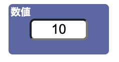さまざまな値を取る数量で、文字で表される。
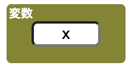スペースに整数などのブロックを入れると、足し算、引き算、掛け算、割り算のいずれができる。どの計算するかは、左の枠から選択できる。
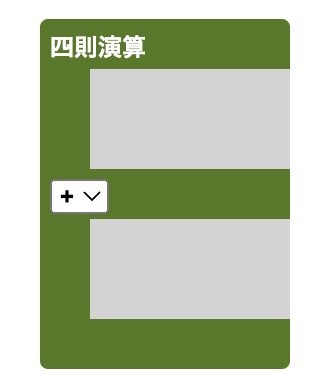かつ、または、を選択して、演算を行うことができる。
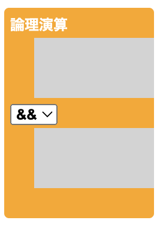イコールの左と右に、変数と変数に代入したいものを入れることができる。
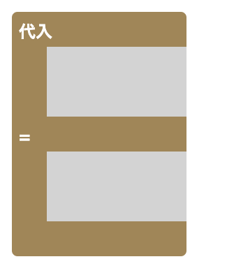関数の外部にある変数を参照できる関数。
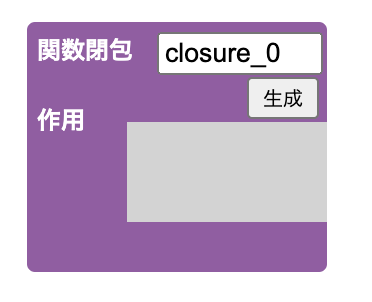与えられた値に対して、定められたさまざまな処理をすることができる。
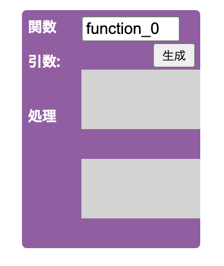関数の一種で、繰り返し自身を呼び出す処理をする関数。同じ処理を繰り返すときに使用する。
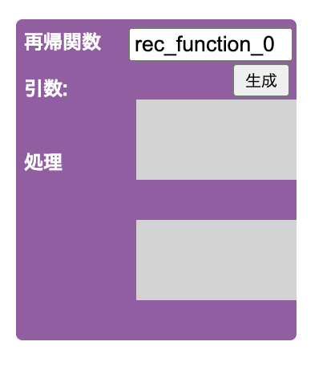プログラム中で呼び出された関数の処理を終了する際に、呼び出し元に対して渡す値である。
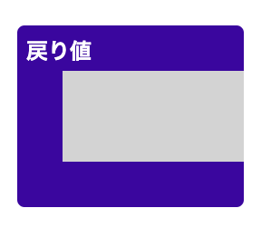特定の処理を繰り返し行うことができる。
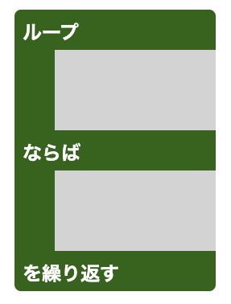特定の処理を回数指定して繰り返し行うことができる。
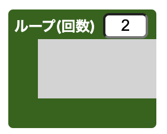変数や値に対して、両辺が一致しているかどうか比べることができる。
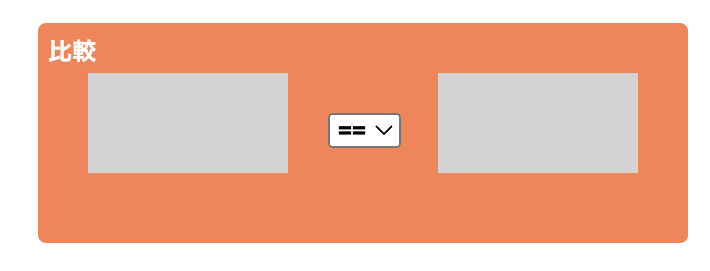場合分けができる。
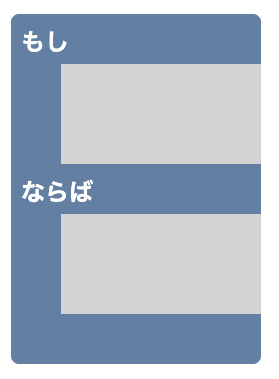二つ以上のさまざまな場合に分けるとき、場合を追加することができる。
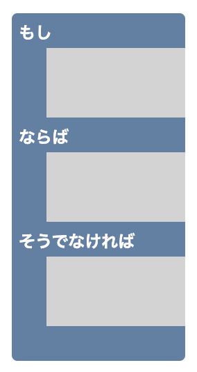出力結果を右のスペースに表示させることができる。
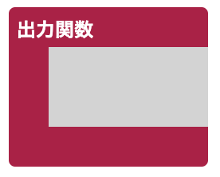